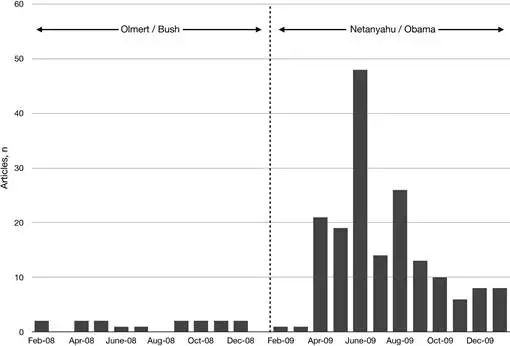
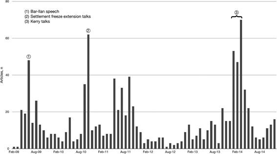
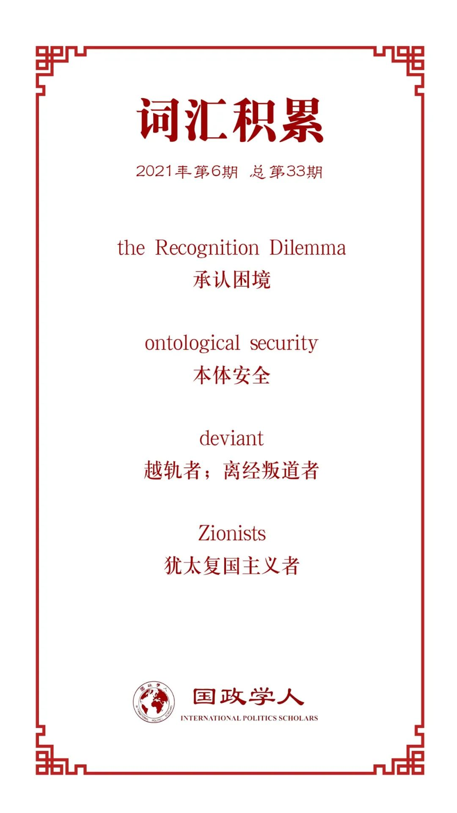

收录于合集

作品简介
【作者】 Joshua Freedman，欧柏林学院政治科学客座助理教授。
【编译】 张曼娜（国政学人编译员，吉林大学公共外交学院）
【校对】 廖泽玉
【审核】 刘瑛琛
【排版】 韩心蕊
【美编 】臧泽华
【来源】 Joshua Freedman, The Recognition Dilemma: Negotiating Identity in the Israeli–Palestinian Conflict, International Studies Quarterly , Volume 65, Issue 1, March 2021, Pages 122–135, https://doi.org/10.1093/isq/sqaa091
【归档】 《国际关系前沿》2021年第6期，总第33期。
期刊简介
《国际研究季刊》（ International Studies Quarterly ）是国际研究协会的旗舰期刊，由牛津大学出版社每年发行四期，旨在发表与国际研究中重要理论性、实证性、规范性主题相关的领先学术成果。根据Journal Citation Reports的数据，该期刊最新影响因子为2.146。
承认困境：
巴以冲突中的身份谈判
The Recognition Dilemma: Negotiating Identity in the Israeli–Palestinian Conflict
Joshua Freedman
编者按
巴以冲突在国际安全与国际关系领域的热度一直居高不下，近期以色列对加沙地带发动的空袭事件再次使巴以冲突成为热点。为解释以色列国内对于承认问题的相异立场，本文构建了一个承认模型和关于承认困境的理论框架，借此将学界的关注点从社会结构及关系转移至国内进程，强调国内进程作为承认政治建构和争论平台的角色定位。
文章导读
美国斡旋下的巴以和谈持续了近五年（2009年—2014年）。期间，以色列总理内塔尼亚胡一再要求将巴勒斯坦民众而非领导层对以色列犹太国家身份的承认（recognition）作为达成最终地位协议的条件之一。尽管以色列政府在积极推动这一条件的实现，但以色列的政界和军事界精英们一直都对政府的这一谈判姿态表示反对。该国精英们认为，过于重视争取巴勒斯坦民众的承认将对以色列的国家身份认同构成威胁。
是什么造成了以色列国内出现了这种关于是否有必要弥补承认缺失的相异立场？近年来，国际关系学普遍认为国家与个人一样，本质上需要承认，只有如此国家才能在一个由社会依赖和社会不确定性定义的世界体系中确立自己的身份。本质模型（intrinsic model）大体上将国家假设为一个寻求承认的单一行为体，同时将这些斗争的起点定位在国家之外，作为社会关系和结构而非单位层次的政治和进程的函数（function）。作者认为这种方法论常常忽略了争取承认的斗争作为一个概念，不仅有助于赋予特定的军事或经济决策以意义，而且其本身也可以是完全独立的实践和目的，正如以色列选择公开其获得承认的要求。与其将这些斗争仅仅视为通过其他方式争取承认，其话语实质也同样揭示了其代理性、工具性以及紧张性的程度。在这一前提下，政治考虑与国内进程将影响关于承认的双方。
本文针对以色列对于“犹太国家”的承认的案例提出两个理论主张： 第一，承认因其本质特性而具有战略价值。第二，操纵承认的战略价值有可能代价高昂。 作者认为存在着这样一种“承认困境”：适当的承认可能成为认可与自我实现的来源，但对承认的争取也可能赋权外部行为体使之超越自身身份，从而显示出自身的脆弱性与依赖性。在实际意义上，“承认困境”也可能成为国内关于承认本身的迫切需要和价值的政治争论的基础。
本文采取两条实证路径，首先追溯了“犹太国家”承认这一新需求的出现，其次将以色列对于这一需求的反对放置在“承认困境”的理论特征之中。作者接下来首先确立了国际关系学关于承认的主导模型：将承认视为（1）本质愿望；（2）被单一的行为体所寻求；（3）回应国际政治的社会不确定性所放大的误识的冲击和恐惧，之后概述了以色列的情况，并以此为基础提出一种从寻求承认的行为体本身的代理和矛盾出发的承认模型。
01
主导模型：本质承认
过去的二十年里，国际关系学者确立了两个关于承认的中心前提： （1）国家有强烈的动机来保护它们的物质和本体安全；（2）国家在关系之中形成其身份，以这两个前提为基础的研究使身份、地位及其承认的斗争被置于国际政治的中心。 国家需要和寻求的承认远不止于法律承认，不同形式的承认可以映射到Wendt关于“薄”承认与“厚”承认的区别中。前者是关于“被承认为法律共同体中的独立主体”，后者是关于“因使一个（行为体）特别或独特的东西而受到尊重”。因此，承认以色列在法律上为一个国家（“薄”承认）和承认其为一个犹太国家（“厚”承认）完全不同。由于“厚”承认与特殊性而非普遍性有关，因此“‘厚承认’的需求可能采取的形式没有限制”。
正是由于这种复杂性，国际关系学者们逐渐将重点转向对“厚”承认的研究，争取承认的斗争取代了物质利益成为国际体系中国家行为的主导解释。学者们对瑞典加入三十年战争、德国牺牲大陆安全建立海军及法国入侵突尼斯的研究，解释了获得承认的愿望如何提高战争发生的可能性以及行为体之间长期的不完全承认如何降低和平解决冲突的可能性。最后，国际关系学中的耻辱研究认为耻辱是一个双重承认的过程，被贴上“越轨者”标签的行为体要通过改变来摆脱污名，以获得新的积极承认。
Murray给出了承认研究最简洁的两个论点： 首先，国家和个人一样渴望自我肯定，因此希望其他国家承认其身份；其次，这种本质需求不仅来自国际政治的社会相互依存，还来自于社会不确定性。
02
超越本质承认：工具性与承认困境
对结构性分析的中心地位的保留导致学者们将对单一国家的假设代入了本质模型，从而忽略了一种更广泛的，且与其想当然的假设相矛盾的承认政治。本文通过将重点从结构和关系转移到复杂的国内政治和寻求承认的行为体本身的过程分析，将承认的力量扩展到全新的分析领域。
作者认为，以色列的犹太国家需求很可能确实源于一种对误识的反应，但它的推动也对巴以谈判和美以关系产生了实际后果，这与内塔尼亚胡政府在这一时期的目标和利益（公开宣传巴勒斯坦人的不承认）是一致的。而本质模型无法区分作为目的的承认和作为行为本身的争取承认的斗争。承认不仅仅是通过结构性压力影响政治决策行为的一个结果，同样也可以是在国际政治中被国家精英利用来获得结果的手段。然而，这一行为在国际政治领域产生承认与否的争议的同时，也使国内针对承认的框架、内容、要求产生了争议。
在研究承认的过程中，一个常见的问题是： 是承认事实既存，还是这一事实因被承认而存在？ 当行为体寻求承认时，一方面强调承认对其的重要性，一方面又声称其身份的存在是独立的既定事实。对承认的需求在反映行为体对其主张的真实性的深刻信仰的同时，也暗示了其身份在构成意义上的脆弱性。 “一个人越强调什么，别人就知道他越缺少什么”，这便是承认困境。
国际关系学者早已发现了这一理论张力，并以其为核心解释在本质上寻求承认的国家如何缓解这一困境，但仍局限于本质上、单一的、结构性的分析，承认困境在这里只是作为一种干预变量用于研究外在的承认的获得与否。然而从国内框架来看，承认困境也可能导致国内政治对承认的必要性的反对而避免寻求承认的过程。在这一框架下，寻求承认和承认困境是一个联合的过程，公开寻求承认导致的承认困境成为国内反对者的一个有力论据。
以色列自身的历史使其特别倾向于这种围绕承认的国内斗争。Adler解释说，以色列长期以来生活在一种需要并寻求国际社会的合法性、理解与同情，同时又轻视世界的悖论中，这便导致了在承认问题上的分裂。下文中，作者便讨论了以色列对于犹太国家身份的需求的现代起源、内塔尼亚胡对于它的工具性接受，以及以色列各政治派别精英间的竞争。
03
犹太国家承认：1917-1947
以色列的存在既取决于犹太族群外部的承认，也取决于犹太族群内部的自动承认。犹太复国主义者（Zionists）获得犹太族群内部的自动承认，才产生了犹太人移民巴勒斯坦的浪潮，并获得了那些未能移民的犹太人的财政与政治支持。若没有英国在1917至1947年的关键时刻在巴勒斯坦承认犹太人的自决权，这些努力也不会获得成功。因此，对以色列来说，“厚”承认（对民族权利的承认）先于“薄”承认（对国家法律地位的承认）。
在自决时代，一旦获得“薄”承认，“厚”承认便不再那么重要，正如1948年后，以色列对犹太国家承认的需求便销声匿迹。“犹太国家”一词在《戴维营协定》（ 1978 Camp David Accords ）、《奥斯陆协定》（ 1993 Oslo Accords ）、《以色列—约旦和平条约》（ 1994 Israel–Jordan peace treaty ）中都没有出现过。直到2007年，以色列在安纳波利斯和平会议上对犹太国家承认的要求，标志着承认政治的巨大转变。
04
安纳波利斯
在安纳波利斯会议前几个星期的会晤中，以色列代表便试图在联合声明中插入“犹太国家”一词，而巴勒斯坦代表则多次表示反对。第三次耶路撒冷会议（10月19日）上，时任以色列外长齐皮·利夫尼（Tzipi Livni）在联合声明中首次提出了以色列作为犹太国家的身份问题，遭到了巴勒斯坦方的强烈反对。而利夫尼对此坚称，一项不仅承认两个国家、而且承认分属两个民族的两个国家的声明，是当下最终结束冲突所需的“历史性和解”的必要组成部分。在随后的几次会议上，巴勒斯坦代表始终对利夫尼的措辞：“以色列是犹太人的国家，巴勒斯坦是巴勒斯坦人的国家”以及以色列在宣传中对巴勒斯坦态度的模糊处理提出抗议。在巴勒斯坦方看来，承认以色列为犹太国家将迫使巴勒斯坦人不仅接受以色列的存在，而且接受犹太复国主义的合法性，而代价是他们自己的身份和历史。除了这一意识形态因素，巴勒斯坦人还以结果论的为理由反对以色列的要求，认为承认以色列为犹太国家既会（1）“剥夺巴勒斯坦难民返回家园的权利”，也会（2）导致对以色列的阿拉伯少数民族狂热歧视。
以色列方经常以此为理由认为和平进程的成功便取决于巴勒斯坦对以色列的承认。尽管如此，几周后布什总统在安纳波利斯宣读的最终联合谅解书中始终没有承认其为犹太国家。在奥尔默特执政的最后动荡的一年，安纳波利斯未能发展成最终地位的谈判，直到内塔尼亚胡2009年重返总理之位时口头承诺要争取承认，这一事业才在以色列主流话语中站稳脚跟。
05
内塔尼亚胡时代

图1 在内塔尼亚胡和奥巴马同时在任的之前和之后一年中，以色列媒体提到犹太国家承认的频率
奥尔默特时代和内塔尼亚胡时代之间存在着明显的话语转变。在内塔尼亚胡执政的第一年，也就是奥巴马就任总统的第一年，以色列媒体发表有关犹太国家承认的文章的频率比奥尔默特执政的前一年高出了惊人的994%。本章提供了一个工具性假设，解释了为什么内塔尼亚胡如此彻底地把他的政府与承认事业联系在一起，评估在奥巴马同时上台的独特环境下寻求承认的价值，以及阐明为何内塔尼亚胡政府急切地启动中东和平谈判。
有效的话语研究表明，尽管对承认的需求往往被视作一种反动说法，然而这一需求也建构了有关承认的冲突关系的存在。正如巴以冲突：虽然巴勒斯坦领导人在某些时候试图把承认犹太国家的需求视为无稽之谈而不予理会，但随着时间的推移，他们也越来越接受承认犹太国家是重要的，只是应该予以反对，而巴勒斯坦持续的拒绝似乎有助于证明这一需求的合理性。
奥巴马于2009年1月20日入主白宫，意图将巴以和平进程作为其政府的一个优先事项。奥巴马执政初期，试图在定居点政策上对以色列施压，相对应的，以色列选举了内塔尼亚胡领导的右翼联盟进入议会，巴以问题结束了“布什—奥尔默特时代”，迎来了“奥巴马—内塔尼亚胡时代”。正是在这一背景下，内塔尼亚胡立即开始表示，他打算将巴勒斯坦建国谈判的条件设定为巴勒斯坦首先承认以色列为犹太国家。
奥巴马的努力在上任仅六个月后似乎就取得了初步成功，内塔尼亚胡在巴伊兰大学（Bar-Ilan University）发表的一次广受期待的演讲中首次宣布愿意接受在以色列旁边建立一个独立的巴勒斯坦国。然而在接受有关两国的方案原则的同时，内塔尼亚胡强调，巴勒斯坦对以色列犹太国家的承认是结束冲突的基本前提，且未来的巴勒斯坦国必须非军事化，这两项要求都遭到了巴勒斯坦官员的拒绝。
在随后的几年里，内塔尼亚胡持续努力推动以色列犹太国家承认的合法化。通过对其公开的分辩进行研究，作者发现两种合法化策略表现得最为突出：一是指责缺乏对阿以巴冲突根源的充分认识；二是声称这一要求是对巴勒斯坦人拒绝放弃返回权的必要反应。
首先，内塔尼亚胡试图将冲突的起源从1967年以色列占领约旦西岸，转移到1948年以色列正式独立之前，以此回击奥巴马对以色列定居点建设的施压。随后，以色列一直致力于将巴以问题的根源从定居点建设转移到巴勒斯坦对以色列的犹太国家承认上。其次，内塔尼亚胡提出，承认以色列为犹太国家也就意味着巴勒斯坦难民问题只能在以色列国境外解决，即拒绝了巴勒斯坦人的返回权，而巴勒斯坦方反过来也以此为理由拒绝承认以色列为犹太国家。
在内塔尼亚胡2009年的巴伊兰演讲之后的几年里，犹太国家承认这一议题在其有关巴以冲突的演讲与评论中仍不断出现，这也导致了这一议题的高媒体关注度。且这一议题的媒体关注的三次峰值（2009年6月、2010年10月与2014年1月至3月）的出现都与美国对巴以谈判的推动密切相关（图2），反过来也证明了内塔尼亚胡一贯以这一议题作为巴以谈判的核心问题。

图2 在美国发起巴以和平谈判后的五年里，以色列媒体提到犹太国家承认的频率2009年1月—2014年12月
2010年10月的第二次高峰恰逢奥巴马领导的谈判的第一次重大危机，国务卿克林顿恳求内塔尼亚胡延长此前达成的冻结定居点的协议，该协议将于9月底到期。9月和10月，美国始终都在巴以之间斡旋，而内塔尼亚胡还是以巴勒斯坦对以色列的犹太国家承认作为延期条件，最终这一谈判破裂。第三次高峰出现在2014年前三个月，恰逢奥巴马政府最后一次推动最终地位谈判，与第二次一样，以色列往往在最后关头提出承认要求。尽管徒劳无功，以色列媒体在这一阶段对承认要求的关注还是超过了以往任何三个月。
这三个高峰反映了一个共同的主题：美国施加巨大压力，内塔尼亚胡及其政府和媒体盟友随后采取可预测的修辞策略。而巴勒斯坦的每一次拒绝，都使这一要求的最初意义不断具体化。这一争论的本质是一场恶语相向的循环，而以色列将巴勒斯坦的拒绝作为谴责美国主导的整个和平谈判的基础。
内塔尼亚胡时期阐明了为争取承认的斗争背后的代理机制。内塔尼亚胡作为代理人使人们注意到了以色列缺乏承认，同时也显示了以色列在承认议题上讨价还价的优势。学者们在解释以色列对犹太国家身份的追求的出现时往往认为是奥斯陆和平进程的失败导致了以色列感到其犹太国家身份受到威胁，然而这种解释假设对承认的需求是由事件的结果决定的，无法解释以色列始终对这一问题的担忧，为何这一议题突然获得了政治重要性，甚至在以色列国内存在反对意见。
06
承认困境
几乎在内塔尼亚胡提出犹太国家承认议题的同时，以色列国内开始以承认困境的理由对此表示反对。反对人士认为：“一旦你接受了对方的承认，便是让对方来定义你是谁”，而无论巴勒斯坦承认与否，都无法改变历史或以色列的身份。然而这些批评从未完全渗透到政府的官方话语中，内塔尼亚胡对此回应：“犹太国家的合法性并不是源于巴勒斯坦人对我们的承认”，但是并没有迹象表明其被说服放弃寻求承认。这一公开争论的存在挑战了国际关系中对于寻求承认的单一观点，即行为体需要并寻求外部行为体对其身份的确认。实际上行为体自身明白：对承认的寻求是可操纵的。
作者认为，本文所提出的承认困境只是为关于承认的冲突如何产生与怎样结束提供了一条可能的路径，在以色列的案例中，这一冲突在国内就存在社会复杂性，内塔尼亚胡利用了与巴勒斯坦的这一矛盾的冲突性。
07
结论
在过去的二十年里，越来越多的研究围绕着这样一个观点展开：国家和个人一样，本质上需要承认，因为只有得到承认，他们才能最终确立自己的身份。然而这一观点将国家视为一个单一行为体。以色列的案例表明，争取承认的斗争不仅是一个国际进程，而且在很大程度上还取决于国内行为体是否以及如何对承认的需要、价值和不承认的情况进行建构、确定优先次序和提出质疑。对政治因素与国内进程的理解能够使我们放弃纯粹的结构性和本质性的研究方法，从行为体内部对承认冲突进行研究。
以色列并不是背离本质模型的特例，政治领袖们经常为获得承认而进行公开的斗争，宣布他们国家的身份、地位或历史的某些关键因素没有得到适当的承认和尊重。美国对自身地位的强调、英国国内在脱欧议题上的分裂等都说明了这一问题。而本文提供了一套新的理论工具对这些案例进行分析，将争取承认的斗争分解为一种修辞实践，与本质的争取承认的欲望相分离，同时，本文也强调了这一修辞实践的影响。
译者评述
国际政治中关于承认的理论最早起源于黑格尔的政治哲学中关于行为体动机所提出的“为承认而斗争（struggle for recognition）”的逻辑。[1]而如文中所述，遵循这一逻辑的国际关系文献多将“承认”作为国家这一单一行为体的政治行为的目的进行研究。
本文的主要价值在于在理论上，提出了“承认”这一概念除了作为一种国家的本质性目的之外，其独立的政治价值以及工具性。在国际关系中，承认既是行为体追求的目标又是其行为的手段。[2]进而，作者提出了“承认困境”这一理念，对国际社会中的国家来说，对承认的热切追求往往过犹不及。这也使得这一理论对于巴以冲突中以色列国家内部对于追求犹太国家承认的争论的存在更具解释力。在对外政策分析领域，作者强调了当“争取承认的斗争”作为一种国际行为的时候其与国内层面的政治考虑之间的互动性，即罗伯特·普特南所提出的国际政治中的“双层博弈论”（Two- level Games Theory），在这一意义上，承认的价值很大程度上由国内的政治考虑建构。
参考文献
[1]曾向红.(2015).国际关系中的蔑视与反抗——国家身份类型与承认斗争策略. 世界经济与政治(05),125-155+160. doi:CNKI:SUN:SJJZ.0.2015-05-008.
[2]赵俊.(2011).国际关系中的承认:合法性与观众成本. 世界经济与政治(04),79-89+157-158. doi:CNKI:SUN:SJJZ.0.2011-04-007.
词汇整理

文章观点不代表本平台观点，本平台评译分享的文章均出于专业学习之用, 不以任何盈利为目的，内容主要呈现对原文的介绍，原文内容请通过各高校购买的数据库自行下载。
好好学习，天天“在看”
国政学人
支持学术公益与知识传播
微信扫一扫赞赏作者 __赞赏
已喜欢，对作者说句悄悄话
取消 __
发送给作者
发送
最多40字，当前共字
上一页 1/3 下一页
长按二维码向我转账
支持学术公益与知识传播
受苹果公司新规定影响，微信 iOS 版的赞赏功能被关闭，可通过二维码转账支持公众号。